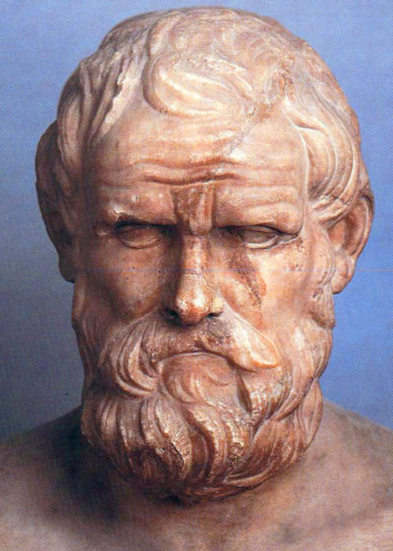

Vuoi sapere di più sull'autore o sull'opera?
Vai alla sezione autore Pagina wikipedia di Aristofane Pagina wikipedia delle Vespe
Scopri di più sul lessico utilizzato in questo testo
Vai a Lessico/Vespe
Le Vespe